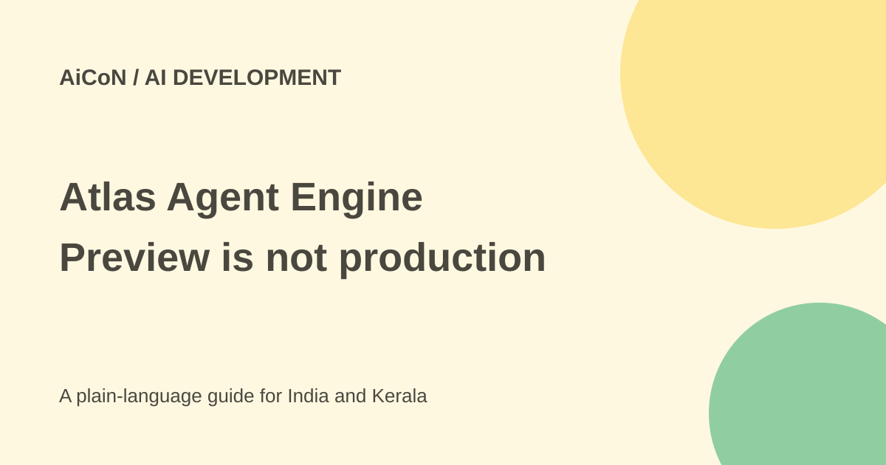

Atlas Agent Engine: preview costs, memory and guardrails
Atlas Agent Engine adds execution, memory and governance for developer-built AI agents. Its technical docs say the public preview is for evaluation and prototyping, not recommended for production deployment.

What is Atlas Agent Engine?
MongoDB describes an agent platform built on Atlas with three main layers: runtime, memory and governance. Runtime runs the agent's work. Memory stores useful context across runs. Governance controls permissions, approval rules, costs and logs.
This is infrastructure for developers and organisations building agents, not a ready-made personal assistant. MongoDB says teams can adopt memory and governance separately or together with runtime, and connect information beyond an Atlas database. The supported connection still needs the right credentials and permissions.
The important public-preview warning
The launch and marketing page talk about getting agents into production. The technical Agent Contract Reference is more restrictive: public preview is intended for evaluation and prototyping, production deployments are not recommended, and breaking changes may occur.
Follow that operational warning when deciding where to test. A prototype that succeeds once is not proof of stable production support. Keep critical business work on an approved system until preview terms and reliability fit the organisation's needs.
Current metered prices
The official preview page lists runtime at $0.04 per 1,000 seconds per vCPU, memory storage at $0.25 per 1,000 long-term memory documents stored and memory retrieval at $0.50 per 1,000 documents retrieved. At the archive's reference rate of about ₹96.43 per US dollar, these are approximately ₹3.86, ₹24.11 and ₹48.22 for the stated units.
These rough INR estimates are not checkout quotes. A vCPU is a unit of computing capacity, so runtime time and capacity both matter. The storage wording on the page does not state a recurring monthly unit; do not silently reinterpret it as a monthly database-storage price.
Pricing is for preview and may change. Model-provider calls, other Atlas services and infrastructure can add costs. The launch says usage can draw on existing Atlas commitments. That is a billing route, not a free allocation. Set a small budget and check actual usage before running a large workload.
How to start a prototype
- Read current preview limitations and decide whether your organisation permits this evaluation.
- Choose a small, read-only task with synthetic or approved public data. Avoid production writes in the first test.
- Review the documented SDK and framework route. The contract reference describes a Python App object and an agent.yaml entrypoint.
- Keep credentials out of code and source control. Grant only the data and tool access required by the prototype.
- Route model and tool calls through the documented wrappers so policy checks and audit tracing apply.
- Test an allowed action, a blocked action and a human-approval interruption. Inspect the resulting logs and recovered state.
- Measure runtime, memory use, model costs, errors and manual review effort. Save results before changing versions.
Memory is useful, but not automatically true
The platform describes semantic, episodic, taxonomic and procedural memory. In simple terms these cover facts, past events, structured categories and reusable procedures. Useful memory can reduce repeated work, but old or incorrectly recorded information still needs checking.
Decide what information belongs in long-term memory, who can access it and how it is removed or corrected. A stored customer detail should not become permission to send a message or change a record. Use current source data for consequential actions.
Audit coverage has a boundary
The documentation says tool and model calls must use app.tool and app.llm wrappers. Calls made outside them are not audited by Atlas Agent Engine and may not replay correctly after a suspended run resumes. The platform's logging claim therefore depends on following the documented execution route.
Marketing says organisation policies cannot be overridden downstream and each action has an identity. Test those controls with your actual adapters rather than assuming a model or framework label proves the integration is safe. Verify data residency, provider handling and retention against the agreement for your deployment.
For Indian developer teams
A college lab or startup can evaluate the design with a small test dataset and a firm spending cap. It is not a zero-cost alternative merely because the original post said public preview. Confirm supported regions, account access and the complete bill before committing real workloads.
What changed since the original post?
The 30 September post focused on memory and governed execution. This guide adds exact metered units, rough INR estimates, the docs' no-production recommendation and the audit-wrapper caveat that broad launch wording can hide.
Frequently asked questions
Is the preview free?
The public page lists consumption prices. Do not assume free use.
Is it recommended for production now?
No. The checked technical docs recommend evaluation and prototyping only.
Does every call automatically get audited?
No. Calls must follow the documented wrapper route.
Was an agent deployed here?
No. This guide is based on public vendor pages and technical docs.
Sources: Product and preview pricing · Preview warning and contract · Memory types · Launch and billing context. Checked 7 October 2026.